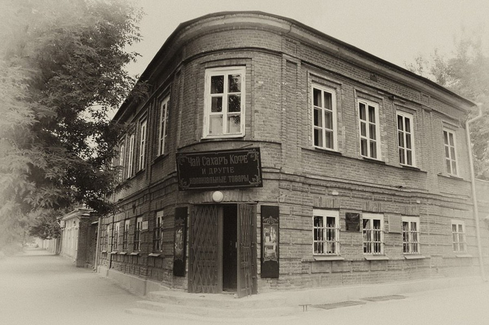
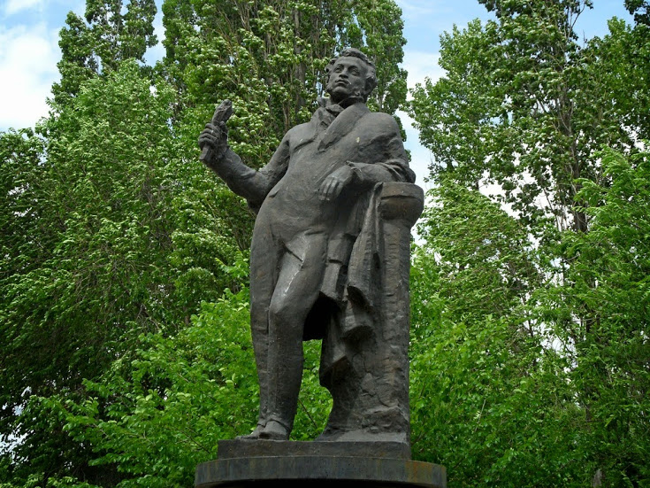
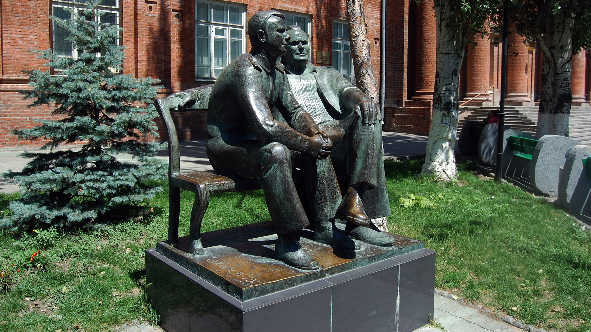

Достопримечательности Таганрога
Таганрог – крупный город в Ростовской области, расположенный на берегу Азовского моря (а точнее, Таганрогского залива), в 70 км от областного центра. Основан в 1698 году царем Петром I. Является важным промешленным центром России, но при этом богат историческими и культурными достопримечательностями, археологическими памятниками, а также старинными архитектурными зданиями и строениями.
Депальдовская лестница
Ка́менная ле́стница — одна из достопримечательностей Таганрога, лестница, связывающая ул.
Греческую с Портовой улицей и Пушкинской набережной. Длина — 108 м, ширина — 6,5 м.
Автор проекта — архитектор Франц Боффо. Относится к памятникам архитектуры,
входит в число объектов культурного наследия Российской Федерации под кодом 6101222000
Длина спуска составляет 108 метров,
а ширина – 6,5 метров. Франц Боффо,
проектировавший лестницу,
решил воплотить в своем творении довольно оригинальное архитектурное решение.
За счет разной длины ступеней в начале и в конце спуска у смотрящего сверху создается впечатление,
что ширина лестницы одинакова на всем ее протяжении.
Если же смотреть снизу, то кажется, что лестница постепенно сужается.
Первоначально ступени спуска были выполнены из ракушечника,
а сам он обнесен по бокам небольшой оградой.
В 1833 году на верхней площадке каменной лестницы были сооружены солнечные часы,
которые на тот момент являлись единственными во всей России.
До революции к часам каждый день торжественно подъезжал особый кортеж для сверки времени.
В 1855 году, во время Крымской войны,
Депальдовская лестница послужила оборонным укреплением:
многочисленный английский десант, высадившийся с целью захвата города,
был с легкостью отбит казачьей сотней прямо на ступенях спуска.
Лестница во все времена являлась одним из самых известных мест в Таганроге.
По ее ступеням когда-то поднимался Д. Гарибальди, а на площадках любили отдыхать Чайковский и Чехов.
В советское время знаменитое сооружение сильно изменилось.
Начиная с 1934 года спуск непрерывно озеленяли,
освещали, облагораживали, ставили и убирали статуи
(стиль которых, к слову, варьировался от античного
до типично-соцреалистического). Результатом столь
бурной деятельности стало запустение и даже частичное разрушение лестницы в конце 20 века
В 2006 году Депальдовский спуск подвергся генеральной реставрации:
сарматский ракушечник был заменен на более прочный и долговечный гранит,
солнечные часы обновлены, а лишняя растительность на склонах убрана.
Хотя замена древнего ракушечника на гранит и вызвала неоднозначную реакцию у жителей города,
Депальдовская лестница все равно остается любимым местом отдыха горожан и местом,
с которого открывается потрясающий своей красотой вид.
Дворец Алфераки
Дворец был построен на деньги местного коммерсанта Н.Д.Алфераки в 1848г.
в стиле необарокко. Здание было выстроено по проекту А.И.Штакеншнейдера — архитектора,
который спроектировал многие объекты в Санкт-Петербурге и Петергофе.
Фасад украшен портиком с коринфскими колоннами,
крыша обнесена изящной балюстрадой, обилие лепных украшений,
среди которых — дворянский герб Алфераки на фронтоне,
богатое внутреннее убранство сделали этот дворец центром притяжения культурно
— общественной жизни в Таганроге: при жизни владельца он давал здесь балы,
и даже посте продажи дворца купеческому обществу в нем проходили спектакли и концерты.
Сегодня в здании дворца размещается Историко-краеведческий музей.
Адрес: Ростовская обл., г. Таганрог, ул. Фрунзе, 41
Круглый дом
Это жилой многоквартирный дом, который строили 3 года:
с 1929г. по 1932г. В плане постройка представляет собой разорванное кольцо,
проект был разработан в Южном машиностроительном тресте.
По замыслу авторов предполагалось построить в ряд 3 подобных дома и один дом в форме буквы «Р»,
чтобы с высоты птичьего полета можно было прочитать «СССР».
Проекту не суждено было осуществиться — был возведен только один круглый дом,
но он примечателен тем, что это первый дом такой планировки, построенный в СССР,
а всего их насчитывается не более 4 штук.
К юбилею постройки, в 2012г., в доме был проведен капитальный ремонт.
Адрес: Ростовская обл., г. Таганрог, ул. Александровская, 107
Музей «Домик Чехова»
«Домик Чехова» — это небольшой флигель, в котором родился знаменитый русский писатель.
Специалисты относят постройку флигеля к 1850г., а с 1859 по 1861гг.
его снимал отец А.П.Чехова, и жил здесь вместе со своей семьей.
Впоследствии дом долгое время сдавался внаем частным лицам,
и многие вещи и фотографии в музее были принесены сюда из других мест,
но с 1921г. началось накопление экспозиции, оформление комнат музея. Первые экскурсии в музее прошли в 1926г.
— в один год с началом цветения посаженных вокруг флигеля вишневых деревьев.
Поскольку флигель довольно мал (около 30кв.м. общей площади),
при посещении музея лучше воспользоваться услугами экскурсовода,
чтобы получить максимум информации и впечатлений.
Во дворе дома в 1935г. установлен бюст А.П.Чехова.
Ростовская обл., Таганрог г., ул. Чехова, 69
Музей «Лавка Чеховых»

«Лавка Чеховых» располагается в доме,
который семья Чеховых арендовала с 1869 по 1874гг: на втором этаже были жилые комнаты,
а на первом отец А.П.Чехова держал свою лавку — торговал чаем, кофе и тому подобными товарами.
Сейчас здесь размещается музей купеческого быта современников писателя,
открытый в 1977г. Экспозиция небольшая,
но с опытным экскурсоводом посещение музея оставит самые приятные впечатления: здесь можно окунуться в старину,
примерить на себя роли героев рассказов Чехова.
В лавке также предлагается широкий ассортимент чая,
так что можно купить себе и вкусный сувенир на память.
Напротив входа находится скульптурная композиция «Толстый и тонкий»
по мотивам творчества писателя, установленная в 2011г.
Адрес: Ростовская обл., г. Таганрог, ул. Александровская, 100
Литературный музей А.П.Чехова
Музей А.П. Чехова располагается в здании мужской классической гимназии,
в которой с 1868 по 1879гг. обучался Антон Чехов. Здание было построено в 1843г.,
и в течение длительного времени именно эта гимназия была едва ли не
единственным источником среднего образования для обширных территорий русского юга.
Помимо основной, в музее часто проходят выездные выставки.
Экспозиция музея, посвященная жизни и творчеству А.П.Чехова,
делает упор на то, что повлияло на развитие литературного таланта знаменитого воспитанника гимназии,
ведь именно в ее стенах он черпал идеи и прототипов многих своих рассказов.
Одного из них можно увидеть при входе —
скульптурная композиция «Человек в футляре» располагается перед зданием музея.
Адрес: Ростовская обл., г. Таганрог, ул. Октябрьская, 9
Дом-музей писателя И.Д.Василенко
Музей представляет интерес
как для любителей творчества автора повестей и рассказов,
которые смогут осмотреть его рабочий кабинет,
где воплощались на бумаге любимые герои и их приключения,
так и для ценителей живописи: в доме работает выставка художника М.А.Сычёва, с которым дружил И.Д.Василенко.
Сам дом также является объектом культурного наследия:
он был выстроен в 1906г., а писатель со своим многочисленным семейством жил здесь более 40 лет:
с 1923г. по 1966г. На доме установлена мемориальная табличка, а перед ним — скульптура работы Д.Бегалова,
изображающая Артёмку — одного из наиболее известных персонажей из созданных писателем.
Адрес: Ростовская обл., г. Таганрог, ул. Чехова, 88/37
Таганрогский художественный музей
Этот музей был основан в 1898г.
по инициативе А.П.Чехова. Экспозиции музея много раз переезжали,
и теперь более 7 тысяч произведений искусства выставляются в особняке постройки середины XIXв.
в историческом центре города.
При формировании фондов музея принимали участие Государственный музейный фонд,
Государственный Русский музей, Музей керамики другие учреждения.
В коллекции музея представлены следующие разделы: живопись, графика,
скульптура и декоративно-прикладное искусство.
Для детей проводятся как обучающие, так и развлекательные мероприятия.
Адрес: Ростовская обл., г. Таганрог, ул. Александровская, 54
Музей градостроительства и быта
Располагается в доме, принадлежавшем до Революции хлеботорговцу
Е.И.Шаронову; здание было выстроено в 1912г. в стиле «модерн» и является памятником архитектуры.
Особого внимания заслуживает внешняя отделка: фасад покрывает мозаика на былинные темы.
Основная экспозиция музея представляет собой собрание
архитектурных планов и чертежей города, различных документов,
фотографий и открыток, а также образцов декоративного и мебельного искусства,
предметов быта, среди которых — коллекция предметов из стекла русского и европейского производства.
Помимо основной экспозиции, в музее проходят передвижные выставки современных художников и скульпторов.
Адрес: г Ростовская обл,. Таганрог, ул. Фрунзе, 80
Таганрогский музей авиационной техники
Музей авиационной техники был основан в 1995г.
— тогда списанные и подлежащие утилизации боевые самолеты удалось сохранить для истории,
и именно эти машины (3 МИГа и 1 СУ) и стали первыми экспонатами музея.
На сегодняшний день в экспозиции под открытым
небом представлены около двух десятков единиц летной техники.
На любой из самолетов и вертолетов можно подняться,
также разрешается посидеть в кабине и подержать штурвал, что особенно привлекает детей и подростков.
Музей расположен на территории военной части, поэтому работает только в будни,
о посещении необходимо договориться заранее и, перед тем как попасть на территорию музея, пройти КПП.
Адрес: Ростовская обл., г. Таганрог, ул. Циолковского, 42
Свято-Никольский храм

Свято-Никольский храм, или Церковь Николая Чудотворца,
знаменит тем, что именно в нем хранится святыня Таганрога — мощи Святого Павла Таганрогского,
а помимо этого — иконы святых Николая Чудотворца и адмирала Ушакова с частицами мощей.
Первое здание церкви было выстроено в 1778г.
на месте высадки Петра I на мысе Таган-Рог,
где он рассматривал возможность постройки крепости и порта.
Во время Крымской войны в ходе обстрела Таганрога несколько бомб застряли в северной стене храма.
Во время Великой Отечественной войны деревянное здание церкви сгорело,
ветхую колокольню взорвали в 1957г., и в современном виде храм был восстановлен только в 90е года ХХв.
буквально из руин. Сегодня это великолепный храм,
при котором также функционируют воскресная школа и музей культуры и истории Приазовья.
Ростовская область, Таганрог, улица Шевченко, 28
Келья Святого Павла Таганрогского
Келья является местом паломничества в г.
Таганроге. Святой Павел Таганрогский (в миру — Павел Павлович Стожков,
годы жизни: 1792—1879) был уроженцем Черниговской губернии, по происхождению — дворянином,
однако еще в молодом возрасте устранился от мирской суеты и посвятил жизнь церковному служению.
Около 10 лет странствовал по святым местам
, а потом поселился в Таганроге, где стал принимать послушников.
Келья — это его последнее место жительства, здесь он жил до самой старости и скончался.
Захоронен на Старом кладбище, в его честь там открыта Часовня Святого Павла.
Адрес: г. Таганрог, Тургеневский переулок, 82
Старый железнодорожный вокзал и памятник-паровоз

Старый железнодорожный вокзал Таганрога (станция Таганрог-2)
сам по себе является памятником архитектуры и истории
— выстроенный из красного кирпича с узорчатой кладкой в 1869г.,
в 1918г. он чуть не был разрушен в ходе восстания. Чтобы нейтрализовать забаррикадировавшихся в здании вокзала юнкеров,
было решено направить на здание паровоз с двумя вагонами нефти.
Лишь по счастливой случайности здание не пострадало,
а в память об этом событии в 1976г.
на площади перед вокзалом был установлен паровоз аналогичной модели. После реконструкции в 2013г.
было принято решение открыть в здании вокзала подразделение Международного Политехнического Музея.
Адрес: Ростовская обл., г. Таганрог, Площадь Восстания, 1
Старинные и новые солнечные часы
Солнечные часы, находящиеся недалеко от входа на Депальдовскую лестницу, были установлены в 1833г.,
через 10 лет после постройки самой лестницы. Это одни из старейших из существующих в России солнечных часов.
Циферблат выгравирован на мраморной плите,
а постамент выполнен из ракушечника —
из такого же камня изначально была выстроена и Депальдовская лестница.
Новые солнечные часы, находящиеся примерно в полутора километрах от старых,
были установлены при входе в Парк культуры и отдыха им. Горького в 2000г.;
угол наклона плиты циферблата этих часов позволил сделать шкалу более точной и равномерной.
Адрес: Ростовская обл., г. Таганрог, ул. Греческая, 58 и ул. Петровская, 104А
Памятник А.П.Чехову «Вишневый сад»
Памятник «Вишневый сад» установлен на Чеховской набережной неподалеку от гостиницы «Приазовье»;
его открытие было приурочено к празднованию 150й годовщины со дня рождения писателя.
Скульптурное изображение Антона Павловича представляет его сидящим в задумчивости на скамейке лицом к морю.
По благоустроенной набережной любят гулять таганрожцы и гости города,
а скамейка, на которую скульптор поместил фигуру писателя,
словно приглашает присесть и поразмышлять о русской литературе и истории, а заодно и сфотографироваться на память.
Памятник был установлен в 2009г.,
его создатель — Д.В.Лындин, авторству которого принадлежат
также скульптурные композиции по мотивам творчества А.П.Чехова:
«Египетская пирамида», установленная недалеко от входа в Парк культуры и отдыха им.
Горького, и скульптура «Роман с контрабасом», находящаяся недалеко от спуска с Депальдовской лестницы.
Еще один памятник А.П.Чехову, установленный в 1960г., находится в одноименном сквере в центре города.
Адрес: Ростовская обл., г. Таганрог, Чеховская набережная
Скульптурная композиция «Грустный клоун»
Композиция «Грустный клоун», или «Дружба не ржавеет»,
или «Железный человек и его друзья», как называют ее местные жители,
была установлена в одном из переулков центра Таганрога в 2010г.
Скульптурное изображение клоуна и его подопечных цирковых животных выполнено сочинским
скульптором Акопом Халафтяном из металлических отходов: обрезков труб, кусков листового металла.
В сравнении с монументальными бронзовыми памятниками эта композиция выглядит немного несерьезно,
однако это и придает ей притягательности, а особенно понравится этот объект детям:
все элементы конструкции находятся в зоне доступа,
их можно свободно трогать руками, а также присесть на лавочку рядом с клоуном и сфотографироваться на память.
Адрес: г. Таганрог, Итальянский переулок, 9
Скульптурная композиция «Юная читательница»
Композиция «Юная читательница»,
или «Девочка с книгой» — это одна из достопримечательностей улицы Греческой,
одной из центральных в Таганроге. Расположение памятника знаковое:
скульптура находится около здания Центральной городской библиотеки им. А.П.Чехова и представляет собой фигуру девочки,
заглядывающей в огромную книгу, символизирующую необъятный мир знаний.
Жители города любят этот памятник за доброту и невинность созданного образа,
раскрывающего темы детского любопытства и тяги к познанию.
Автор памятника — скульптор Д.В.Лындин, дата установки — январь 2010г.
Адрес: Ростовская обл., г. Таганрог, ул. Греческая, 105
Памятник таганрогским подпольщикам «Клятва верности»

Памятник «Клятва верности» представляет собой скульптурную композицию,
изображающую девушку и юношу, взгляды которых направлены в небо — таким образом авторы памятника, скульпторы Грачевы,
увековечили таганрогских подпольщиков времен Великой Отечественной войны, многие из которых были еще совсем молоды.
Памятник был установлен в 1973г.,
в очень символичном месте: напротив в то время располагалась
средняя общеобразовательная школа №2 (сегодня — Литературный музей),
многие выпускники и ученики которой помогали подпольщикам и даже сами выполняли опасные задания в годы оккупации.
Адрес: г. Таганрог, Спартаковский переулок, 5
Памятник Фаине Раневской
Памятник Раневской в Таганроге находится рядом с домом,
в котором прошли детство и юность великой актрисы.
Бронзовая скульптура изображает Ф.Г.Раневскую в образе Ляли из фильма «Подкидыш».
Существует много споров касательно того,
понравился бы этот памятник самой Фаине Георгиевне,
ведь образ Ляли не входил в число любимых ею, однако для потомков он действительно один из самых узнаваемых.
Автор памятника — ростовский скульптор Д.Р.Бегалов.
После установки в мае 2008г. вандалы попытались украсть зонтик,
который на тот момент мог свободно вращаться в руке актрисы — такова была задумка скульптора.
После нескольких попыток похитить зонтик он был намертво приварен к фигуре.
В доме, где проживала семья будущей актрисы, планируется открыть музей, посвященный этому периоду ее жизни.
Адрес: Ростовская обл., г. Таганрог, ул. Фрунзе, 10
Памятник Петру I
Памятник Петру I имеет богатую историю.
Отлитый из бронзы в Париже под руководством скульптора М.М.Антокольского в 1898г., в 1901г. он был перевезен в Россию,
а 14.05.1903г. состоялось открытие, установлен он был напротив входа в Таганрогский городской парк.
Скульптор воплощает характер Петра:
стремительный и готовый решительно противостоять трудностям.
Основатель Таганрога как будто замер на том месте,
где город был основан: после многократных переносов
(по разным данным, скульптуру переносили от 8 до 12 раз)
памятник на данный момент находится на мысе Таган-Рог — по легенде, именно здесь Петр в 1696г. велел заложить крепость,
а первое упоминание о Таганроге относится к 1698г., и именно его считают годом основания города.
В 2008—2009гг. в сквере, окружающем памятник, были проведены работы по благоустройству территории.
Адрес: Ростовская обл., г. Таганрог, сквер Петра I на Комсомольском бульваре
Памятник Александру I
Памятник является видоизмененной копией оригинального памятника,
пущенного на переплавку в 1932г. В оригинальной версии Александр
I попирал ногой змея — аллегория относилась к победе в Отечественной войне 1812г.,
кроме того, у ног царя сидели крылатые ангелы. При восстановлении памятника по сохранившимся чертежам в 1998г.
эти детали были признаны несущественными для столь монументальной скульптуры, и их убрали.
Левой рукой император, одетый в генеральский мундир и ниспадающий плащ,
придерживает эфес шпаги, а в правой держит свод законов Российской Империи.
Неслучайно место установки памятника — перед зданием банка,
который профинансировал его восстановление в честь 300-летия Таганрога.
Адрес: г. Таганрог, Александровская площадь
Памятник А.С.Пушкину

Памятник в честь посещения Таганрога великим поэтом в 1820г.
был установлен на Пушкинской набережной в 1986г., а в 2002г.
перемещен на 150 метров в связи с реконструкцией набережной.
Вокруг памятника разбит сквер со скамейками,
дающими возможность отдохнуть после прогулки по набережной или спуска по Депальдовской лестнице.
Авторы памятника — скульптор и народный художник Г.В.Нерода и архитектор П.В.Бондаренко
— запечатлели А.С.Пушкина как будто остановившимся во время променада. В сквере также установлены памятник М.И.Таничу,
скульптурная композиция «Роман с контрабасом», памятный знак в честь 300-летия Таганрога и современная скульптура «Верность».
Адрес: Ростовская обл., г. Таганрог, Пушкинская набережная, 5
Памятник Королеву и Гагарину

Памятник располагается в историческом центре города
, в шаговой доступности от сквера Петра I и музея «Домик Чехова».
Бронзовая скульптура, изображающая Юрия Гагарина и Сергея Королева сидящими рядом на лавочке,
была изготовлена в 1975г. скульптором О.К.Комовым и демонстрировалась на выставке в Москве.
Автор польстил Гагарину: известно,
что первый космонавт был небольшого роста,
а скульптурное изображение представляет его высоким.
Впоследствии памятник привезли в Таганрог,
где изначально передали картинной галерее, но в 2002г.
он был установлен перед зданием Инженерно-технической академии
— бывшего Таганрогского радиотехнического института, выпускники которого в 50е годы ХХв.
работали в составе команды Королева над первым запуском ракеты с человеком на борту в космос.
Местные жители в шутку называют памятник «Третьего ждут»,
а у выпускников академии есть традиция фотографироваться у памятника.
Адрес: г. Таганрог, ул. Чехова, 22
ПКиО им. Горького

Парк культуры и отдыха им.
Горького в центре Таганрога
— это зеленый тенистый парк в историческом центре города;
в шаговой доступности находятся Каменная лестница,
Музей Чехова и т.п. достопримечательности. Изначально на этом месте был Аптечный сад,
но в 1909г. он был вырублен, а территория вновь засажена уже другими деревьями.
В 1934г. сад переименовали в парк имени Горького.
На территории парка есть множество культурно-досуговых объектов: шахматно-шашечный павильон,
детские аттракционы и площадки, мини-зоопарк, а также фонтаны, летние открытые эстрады и кафе.
Кроме того, здесь есть и памятники:
мемориальная доска и вечный огонь в память о Великой Отечественной войне, памятники М.Горькому и В.Я.Литвинову,
а также два ботанических памятника природы: черешчатый дуб и гинкго двулопастный.
Адрес: Ростовская обл., г. Таганрог, ул. Петровская
Мемориал Славы на Самбекских высотах

Мемориал представляет собой скульптурно-парковый комплекс,
воздвигнутый в честь советских воинов, в августе 1943г. прорвавших «Миус-фронт» —
так нацисты называли практически неприступный рубеж оборонительных укреплений на западном берегу реки Миус.
Мемориал представляет собой две полукруглые бетонные стены с высеченными в них изваяниями советских солдат.
Стены разорваны по центру — таким образов авторы памятника отдают дань уважения двум стрелковым дивизиям,
участвовавшим в прорыве. В 2011г.
была проведена реставрация монумента, а в 2018г. — высажен парк, названный «Садом Победы».
Адрес: Ростовская область, Неклиновский район, возле пересечения А-280 и 60К-7
Аквапарк «Лазурный»

Аквапарк работает только в летний период,
зимой в помещении аквапарка открывается каток.
Летний вариант отдыха предлагает развлечения в открытых бассейнах,
один из которых полностью оборудован для посетителей с маленькими детьми.
Для детей постарше и взрослых есть горки
(высота старта до 12 м.) разнообразной конструкции.
Всего в аквапарке 5 бассейнов, один из которых постоянно подогревается. Для удобства гостей имеются душевые,
шезлонги, камеры хранения, на территории есть бесплатный Wi-Fi, работают кафе, пиццерия и бар.
Зимой, когда открывается крытый каток, здесь также проходят различные спортивные состязания.
Адрес: Ростовская обл., г. Таганрог, ул. Адмирала Крюйса, 6
Картинг-клуб «Формула»

Картинг-клуб приглашает любителей острых ощущений всех возрастов:
здесь есть карты различных модификаций и размеров. Длина трассы превышает 500 м.
— это одно из немногих заведений подобного рода на юге России, которое может похвастаться столь протяженной карт-трассой.
На территории есть кафе, расположение очень удачно: в шаговой
доступности Пушкинская набережная, сквер и пляж. Заведение работает летом и в межсезонье, зимой закрывается,
рабочее время лучше уточнить заблаговременно. Есть возможность аренды клуба для проведения различных мероприятий.
Адрес: г. Таганрог, ул. Адмирала Крюйса, 2-2